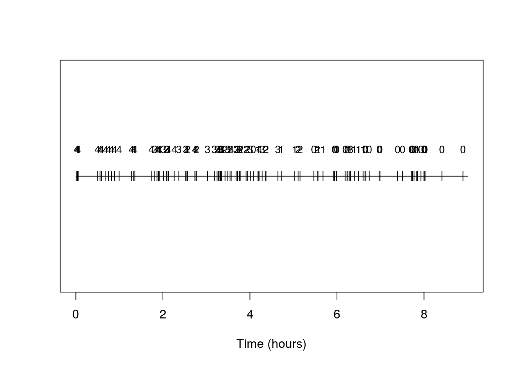
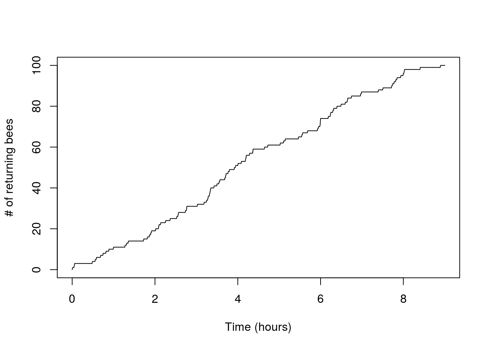
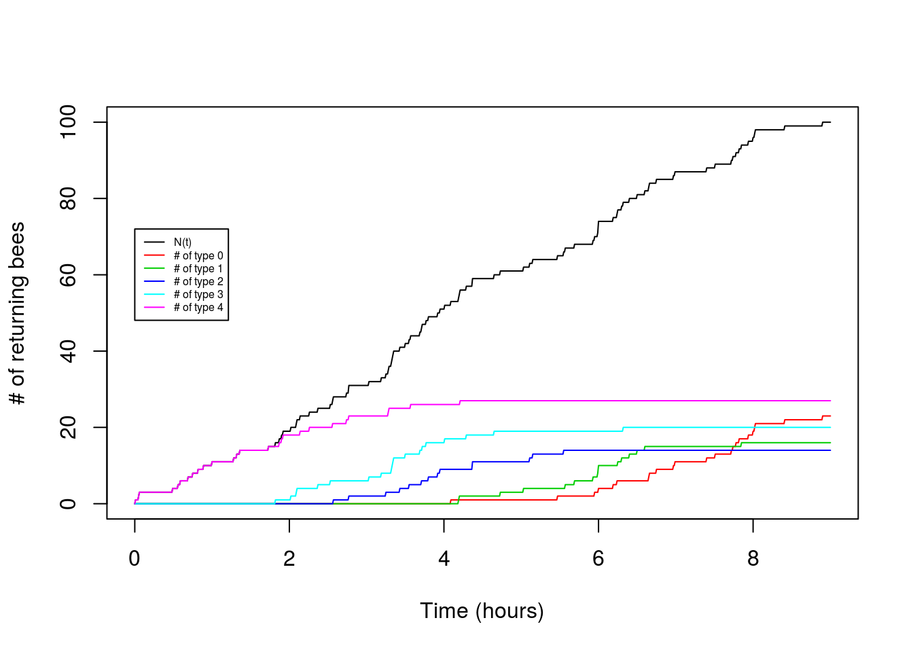

Time-dependent thinning of a Poisson Process
John Novembre
2016-01-31
Last updated: 2017-03-06
Code version: c7339fc
Pre-requisites
This vignette assumes a previous introduction to Poisson Processes.
Overview
An important extension to the basic Poisson Process with rate \(\lambda\) is to consider that each arrival may be categorized according to a certain type. If we let \(K\) be the total number of types, we might build a model in which the types are determined probabilistically according to a set of type probabilities (\(p_1,\ldots,p_K\),\(\sum_{i=1}^K p_i = 1\)). In this case, where we say the type probabilities are time-homogeneous, the arrivals of type \(i\) form a thinned Poisson Process that has a rate parameter of \(\lambda p_i\).
In this vignette, we are going to address the more difficult case in which the type probabilities vary through time.
Let \(P_i(s)\) reflect the probability of an arrival being type \(i\) given it arrives at time \(s\). A result from Poisson Process theory is that the number of arrivals of type \(i\) by time \(t\), which we denote \(N_i(t)\), will be Poisson with rate \[N_i(t) \sim Pois(\lambda \int_0^t P_i(s)ds).\] Our first goal here is to demonstrate this result holds true in some simulations.
Simulating a Poisson Process with time-dependent type probabilities
An algorithm for simulating a Poisson Process with time-dependent type probabilities can be fairly simple:
- Simulate the number of arrivals \(N\) via a \(Pois(\lambda t)\)
- Conditional on \(N\), simluate the arrival times as independent uniform draws from \((0,t]\).
- For each arrival, simulate it’s type from the discrete probability distribution specified by \({P_i(t),i=1,\ldots,K}\).
Let’s try this in practice.
Motivation: The rate of arrival of successful foragers
So that we have a concrete example, suppose that we are monitoring the success of foragers, who have a maximum capacity of gathering \(K\) food items. The number collected by each forager determines their type (so a forager who brings back 3 items is type 3). Let’s further suppose the number of food items they gather is binomially distributed with a probability that is time dependent according to a function \(p(t)\). Further suppose we expect food to be harder and harder to gather - such that \(p(t)\) is a logistic decay function \[p(t)=\frac{1}{1+e^{-b(t-a)}}\] where \(b<0\). The parameters \(a\)determine the inflection point of the logistic curve and \(b\) determines the rate of change of the success probabilty through time.
To add some further interpretability to the parameters, let’s suppose we are thinking of foraging bees returning to a hive and that our time scale of interest is a single day of foraging (say 9 hours over which they are returning to the hive), that the inflection point is midday (so \(a=4.5\) hours) and the rate at which the flowers are being depleted has a logistic decay rate such that \(b=-1\). Let’s plot this success probability curve.
t<-seq(0,9,by=0.01)
p<-function(t,a=4.5,b=-1){return(1/(1+exp(-b*(t-a))))}
# Plot for a=50, b=0.1
plot(t,p(t,a=4.5,b=-1),ylim=c(0,1))Very cool. Let’s further suppose the rate at which foraging bees return is 10 per hour and they can bring a maximum of 4 pollen granules back. We might suppose using a binomial distribution to determine their type is appropriate if they are visiting \(K\) flowers, and at each they have an independent probability of picking up a pollen granule.
So if all goes well our Poisson Process result will help us derive the number of bees of each type at different time-points during the day. Going into this, we can expect that given \(b<0\) the beginning of the process will contain more type \(4\) individuals, and then later in the process it will decrease.
Simulation of a single instance
All the above is simply to say we have time-dependent thinned Poisson Process with \(P_i(t) = P(X=k)\), where \(X \sim Binom(n,p(t))\), \(p(t)=\frac{1}{1+e^{-b(t-a)}}\), and \(\lambda=10, K=4, t=9, a=4.5, b=-1\). So we can now write out our full simulation code:
# Initialize parameters
lambda<-10
K<- 4
b<- -1
a<- 4.5
t<- 9
# Declare p(t)
p<-function(t,a=50,b=-0.1){return(1/(1+exp(-b*(t-a))))}
# Declare function that assigns a random type
assign_type<-function(t,K,a,b){
return(rbinom(1,K,p(t,a,b)))
}
# Begin one replicate of simulation
## Draw total number of arrivals
N<-rpois(1,lambda*t)
## Draw the arrival times
arrival_times<-runif(N,min=0,max=t)
## Assign types to the arrivals
types<-numeric()
for(i in seq(1,N)){
types[i]<-assign_type(arrival_times[i],K,a,b)
}So the R variables N, arrival_times, and types contain the # of arrivals, the sequence of arrival_times and types.
Ploting results for a realization of the process
We can make a simple plot of the timing of arrivals, annotating them each by type:
## And let's make a plot
plot(c(0,t),c(0,0),type='l',xlab='Time (hours)',ylab='',yaxt='n');
points(arrival_times,rep(0,N),pch='|',cex=0.85)
text(arrival_times,rep(0.25,N),types,cex=0.85) And indeed we see the prevalence of types is changing and with the higher number types becoming rarer as time progresses.
Another useful plot is the standard counting process plot:
x<-seq(0,t,by=0.01)
n_t<-sapply(x,function(s) sum(arrival_times<s))
plot(x,n_t,type='l',xlab='Time (hours)',ylab='# of returning bees')
Now let’s try making a plot that adds in the arrivals of each type:
x<-seq(0,t,by=0.01)
n_t<-sapply(x,function(s) sum(arrival_times<s))
plot(x,n_t,type='l',xlab="Time (hours)",ylab="# of returning bees")
for(i in seq(0,K)){
n_i<-sapply(x,function(s) sum(arrival_times[types==i]<s))
points(x,n_i,type="l",col=(i+2))
}
legend(0,0.8*t*lambda,legend=c("N(t)","# of type 0","# of type 1","# of type 2","# of type 3","# of type 4"),lty=1,col=c(1,2,3,4,5,6),cex=0.5) So cool! We can see the type 4 arrival bees drop off and the type 0 arrivals increase as the hours pass.
What is cooler is that we can generate theoretical expectations for these patterns. Our simluations should follow some underlying mean values that we can predict given the parameters. Let’s try.
Comparison to theory
For the total number we have a simple Poisson Process, so \[E[N(t)]=\lambda t.\] Now let’s consider the counts of type \(i\) arrivals. From Poisson Process theory we know:
\[E[N_i(t)]=\lambda \int_0^t P_i(s)ds.\] But what do we obtain from this using our example?
Let’s substitute in our problem-specific \(P_i(s)\), which we know is binomial probability mass function with a specific time varying success probability (\(p(t)\)).
\[E[N_i(t)]=\lambda \int_0^t \frac{n!}{(n-i)!i!} (\frac{1}{1+e^{-b(s-a)}})^i(1-\frac{1}{1+e^{-b(s-a)}})^{n-i}ds\] Nasty! Makes us wish those bees had a simple linear or exponential decay to their foraging success, because then we’d have some hope of integrating this mess analytically. As it is, we need to numerically integrate. To evaluate this for a single \(t\) we could use a single call to the integrate function, but we’re interested in plotting the mean values over a range of \(t\), so let’s build our own (crude) numerical integrator and store the partial integrals for all the values of t we want.
# Code for numerical intergration
## Set a little dx for the increments in our numerical integration
dx=0.01
## Initalize a sequence of x's we will evaluate the integrand
x<-seq(0,9,by=dx)
## Initialize a matrix where we'll store values of partial integral for each of the K+1 possible types.
int_pt=matrix(nrow=K+1,ncol=length(x))
for(i in seq(0,K)){
int_pt[i+1,1]<-0
for(l in seq(2,length(x))){
## Being a little cautious, we work with log of integrand evaluated at x
log_pr<-i*log(1/(1+exp(-b*(x[l]-a))))+(K-i)*log(1-(1/(1+exp(-b*(x[l]-a)))))
## And then take exponential, multiply by dx, and to our running sum
int_pt[i+1,l]<-int_pt[i+1,l-1]+exp(log_pr)*dx
}
}
# And then we make plots
plot(x,lambda*x,type="l",ylab="E[# of returning bees]",xlab="Time (hours)")
for(i in seq(0,K)){
points(x,lambda*choose(K,i)*int_pt[i+1,],type="l",col=(i+2))
}
legend(0,0.8*t*lambda,legend=c("N(t)","# of type 0","# of type 1","# of type 2","# of type 3","# of type 4"),lty=1,col=c(1,2,3,4,5,6),cex=0.5)
Victory! Our theory for the expectation matches the observed pattern fairly nicely.
A follow-up question about the hive:
So what is the total amount of pollen in the hive? We’d guess the total amount might plateau through time. To calculate the amount, call it \(F(t)\), we can do some basic accounting to write it as \[F(t)=\sum_{i=1}^K iN_i(t)\]. Let’s just look at this based on the results of our expectation:
Ft<-rep(0,length(x))
for(i in seq(0,K)){
Ft<-Ft+i*int_pt[i+1,]
}
plot(Ft)And indeed we see a plateau! When does it suggest the bees should stop bothering with collecting?
Extensions
Challenge Problem 1
Repeat the problem above but assume a linear decay from a probability of 1 to 0 over the time period of 0 to \(t\). As the main challenge, derive an analytical form for the mean of \(N_i(t)\) (i.e, you should not need to use the numerical solution for the integral obtained above, though you could use it to check your answer!).
Challenge Problem 2
Consider a system where there are only two possible types of arrivals at time \(t\): \(N_1(t)\) and \(N_2(t)\). And let’s add a wrinkle of complexity. An arrival at time \(s\) will first be of type 1, but will transition to be type 2 at a random time. Let that waiting time be distributed according to a cumulative distribution function \(G(s)\). This implies an arrival at time \(s\) will still be type \(1\) at time \(t\) with probability \(G(t-s)\) and will have changed to type 2 with probability \(1-G(t-s)\).
This sounds complicated, but we can still apply our time-dependent Poission Process results to it. In this case \(P_1(t)=\int_0^t G(t-s)ds\) and \(P_2(t)=\int_0^t (1-G(t-s))ds\). For the case where \(G(s)=e^{-\lambda_{12}}\), generate simulation code and test it against the theory as we did above. One challenge will be that your code for assigning types will depend on \(s\) and \(t\)!
To provide a biological motivation, ground your work in supposing you are monitoring a susceptible population of individuals and \(\lambda\) is the rate of arrival of infected individuals to your hospital over the period of 100 days. Suppose \(\lambda=0.5\) patient arrivals per day. Suppose the survival time of individuals in your hospital is exponential with rate of 0.1 patients per day (\(\lambda_{12}=0.2\)).
As a practical application of the model, try to answer these questions: 1) What is the average number of patients you expect 100 days into the epidemic? 2) You’d be cursed to design your hospital based on the average number, because you’d have to turn away sick patients quite often. So if you are preparing for a particularly bad outcome, say the upper number of patients that would be expected in 1 out of 100 epidemics, how many beds would you put in your hospital?
Challenge Problem 3
A further challenge: Consider each arrival is initially of type 0 and that the probabiity an item arriving at time \(s\) is of type \(i\) at time \(t\) is determined by a continous time Markov transition probability matrix \(P_{0i}(t-s)\). For a simple transition matrix of your choice, work out a simulation and check against the theory.
Session information
sessionInfo()R version 3.3.2 (2016-10-31)
Platform: x86_64-pc-linux-gnu (64-bit)
Running under: Ubuntu 14.04.5 LTS
locale:
[1] LC_CTYPE=en_US.UTF-8 LC_NUMERIC=C
[3] LC_TIME=en_US.UTF-8 LC_COLLATE=en_US.UTF-8
[5] LC_MONETARY=en_US.UTF-8 LC_MESSAGES=en_US.UTF-8
[7] LC_PAPER=en_US.UTF-8 LC_NAME=C
[9] LC_ADDRESS=C LC_TELEPHONE=C
[11] LC_MEASUREMENT=en_US.UTF-8 LC_IDENTIFICATION=C
attached base packages:
[1] stats graphics grDevices utils datasets methods base
other attached packages:
[1] MASS_7.3-45 expm_0.999-0 Matrix_1.2-8
[4] workflowr_0.4.0 rmarkdown_1.3.9004
loaded via a namespace (and not attached):
[1] Rcpp_0.12.9 lattice_0.20-34 gtools_3.5.0 digest_0.6.12
[5] rprojroot_1.2 grid_3.3.2 backports_1.0.5 git2r_0.18.0
[9] magrittr_1.5 evaluate_0.10 stringi_1.1.2 tools_3.3.2
[13] stringr_1.2.0 yaml_2.1.14 htmltools_0.3.5 knitr_1.15.1 This site was created with R Markdown